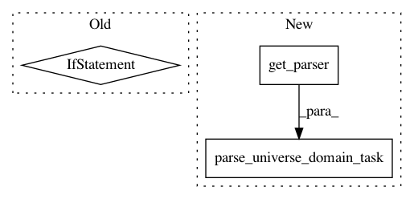

85aea8b77a57afbb8d81a1235382b73bff6552be,examples/mujoco_all_sac_lsp_hierarchy.py,,main,#,357
Before Change
**ENV_PARAMS[args.env],
)
trained_policies_path = (
LOCAL_POLICIES_PATH
if args.mode == "local"
else RLLAB_MOUNT_POLICIES_PATH
)
variant_spec["low_level_policy_path"] = tune.grid_search([
os.path.join(trained_policies_path, p)
for p in variant_spec["low_level_policy_path"]
After Change
def main():
parser = get_parser()
parser.add_argument(
"--low_level_policy_path", "-p", type=str, default=None)
args = parser.parse_args()
universe, domain, task = parse_universe_domain_task(args)
variant_spec = dict(
COMMON_PARAMS,
**ENV_PARAMS[args.env],
In pattern: SUPERPATTERN
Frequency: 3
Non-data size: 3
Instances
Project Name: rail-berkeley/softlearning
Commit Name: 85aea8b77a57afbb8d81a1235382b73bff6552be
Time: 2018-07-27
Author: kristian.hartikainen@gmail.com
File Name: examples/mujoco_all_sac_lsp_hierarchy.py
Class Name:
Method Name: main
Project Name: rail-berkeley/softlearning
Commit Name: ce04229b64ecaa9f6947235c23eeaf8c804bcc33
Time: 2018-07-25
Author: kristian.hartikainen@gmail.com
File Name: examples/mujoco_all_sac.py
Class Name:
Method Name: main
Project Name: rail-berkeley/softlearning
Commit Name: ce04229b64ecaa9f6947235c23eeaf8c804bcc33
Time: 2018-07-25
Author: kristian.hartikainen@gmail.com
File Name: examples/mujoco_all_ray.py
Class Name:
Method Name: main